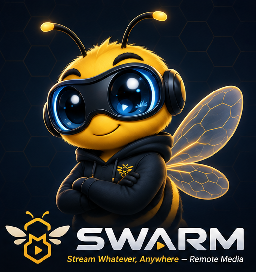

Welcome to SWARM
Stream Whatever, Anywhere — Remote Media
Choose the folder with your music and video. SWARM will scan it and can stream from it to devices in your swarm.
Status
LAN streaming is never throttled. Turn this off to let internet streams use all available upload bandwidth.
Local subtitles
Loading subtitle settings…
Recommended for smooth playback. Turn this off only if the server has enough CPU for streaming and Whisper at the same time.
Media roots
TMDb scraping
Subtitle downloads
Approve a TV
On the TV, choose Connect through SWARM or select this server under Servers on LAN. Enter the code shown there — the same box works either way.
Local network
Swarm
Server notifications
Important background-task results and errors from this media server. Select a notification to view its full details.
Client errors
Errors reported back by client devices (playback failures, unreachable servers, etc.) — sent here for triage. Delete an entry once you've resolved it.
Library
What is MCP?
MCP lets an AI assistant — Claude, Codex, or any other MCP-compatible client — look things up in your library on your behalf. It's read-only: it can search and check status, but it can't change settings or touch your files.
Try asking
Once connected, just ask in plain language — no special syntax needed:
MCP Server
Create a token, enable the server, save, and restart SWARM. Your AI tool sends this token with each MCP request so only clients you configure can access your library.
Connect an AI tool
Add this Streamable HTTP server to your AI tool's MCP configuration. Replace the LAN IP, keep the bearer token private, then restart the AI tool.
MCP Server API
- search_library — find entries by title, kind, genre, rating, or liked status
- get_entry_details — full synopsis, cast, rating, and genres for one entry
- list_swarm_devices — which devices in your swarm are online
- list_client_errors — recent playback/report issues, for triage
What is SWARM?
A private media server and a family of clients that stream your own library straight to your own devices — no cloud, no subscription, no middleman.
Want the technical details?
Every connection between your devices is end-to-end encrypted with TLS 1.3 — the same standard banks use — and mutually verified, so a device has to be one you've actually invited before it can ever connect.
New devices join with a short one-time code you generate yourself. On your home network, a device can also be trusted directly with its own short-lived pairing code — nothing has to leave your network to do it.
Signing in to generate codes needs a basic account (just an email and password) that's kept completely separate from your media — it stores nothing about your library, your files, or what you watch. Login credentials on your devices are kept in hardware-backed secure storage, not as plain files anything could read.